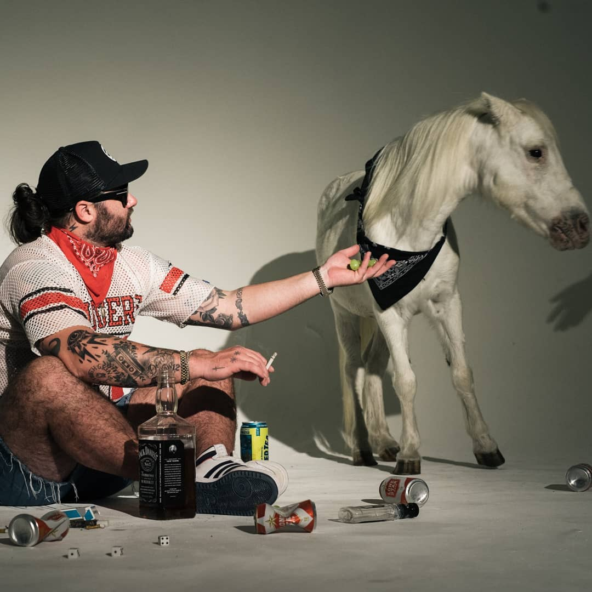

mark_04_fact.html
if i wasn't in art school i would probably be a lit or geo major.
this is Tim.
he wrote 'The Things They Carried'.
it's one of my favorite books.
here are some artists that i like:
(tap on damien for the next fact.)
(1)
(2)
(3)
 (4)